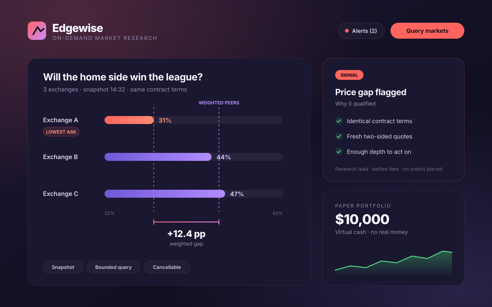
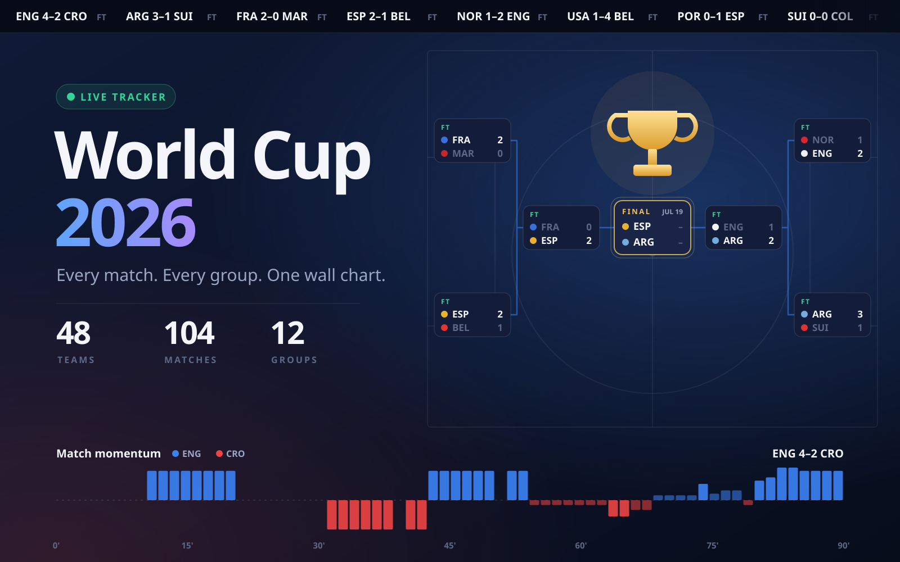

01
Cloud Architecture
A cloud foundation shaped around your idea. Architecture and infrastructure that support your application today and give it room to grow.
Let’s discuss itHello, I’m Ray Ali
I bring ideas to life through cloud architecture, application development, and automation — with the power of AI.
Selected work

A local media hub: organise your library, then cast it, a browser tab, or your whole screen to the TV, with your phone as the remote.
Explore project
A desktop instant replay app that keeps the last few moments ready to save. Capture what just happened, trim the clip, and keep it on your machine.
Explore project
An on-demand research tool that lines up prediction-market odds across exchanges and shows where they don’t agree.
Explore project
A self-running tournament tracker that follows all 104 matches live, from the first kickoff to the final whistle.
Explore projectThree tools built for the University of Houston: accessible course documents, AI-assisted grading, and a STEM event platform.
What I do
A cloud foundation shaped around your idea. Architecture and infrastructure that support your application today and give it room to grow.
Let’s discuss itBring a concept to life as a usable application. From the first screen to the working product, with AI helping move ideas forward.
Let’s discuss itMake repetitive work happen automatically. Connect tools, streamline workflows, and turn manual steps into systems that work for you.
Let’s discuss itAbout me
I’m Ray. I turn ideas into useful digital experiences, connecting the possibilities of AI with cloud architecture, application development, and automation. My projects are a place to explore what’s possible and put those ideas to work.
More about meLet’s build something
Tell me what you have in mind. Cloud, applications, automation, or something in between.